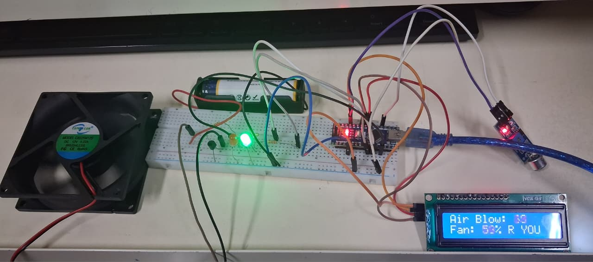
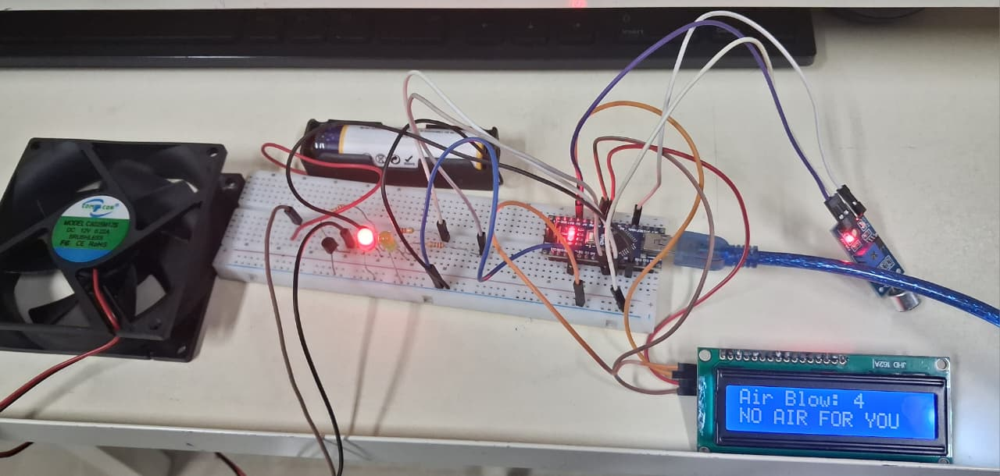
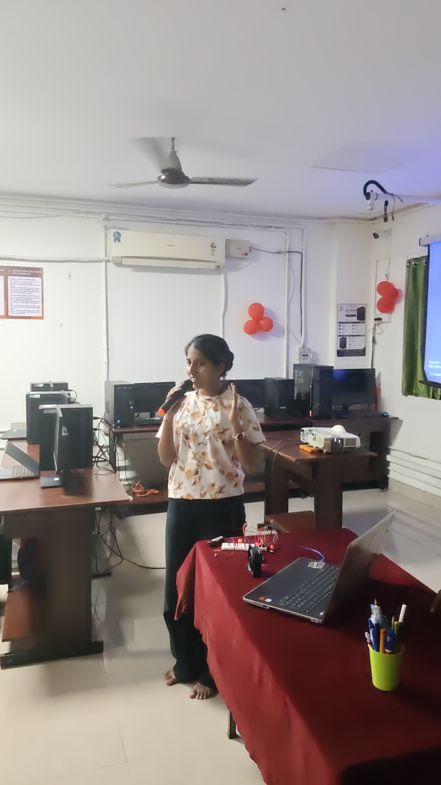
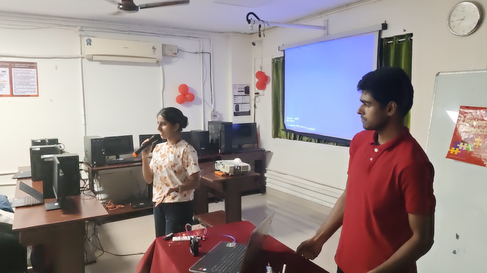
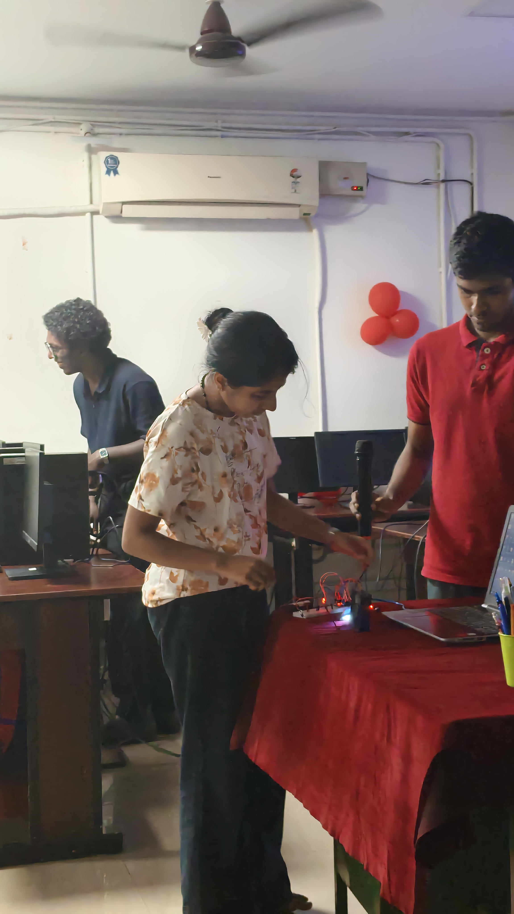
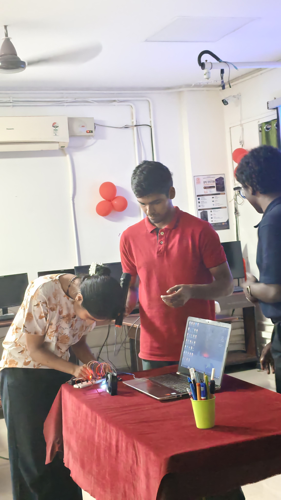
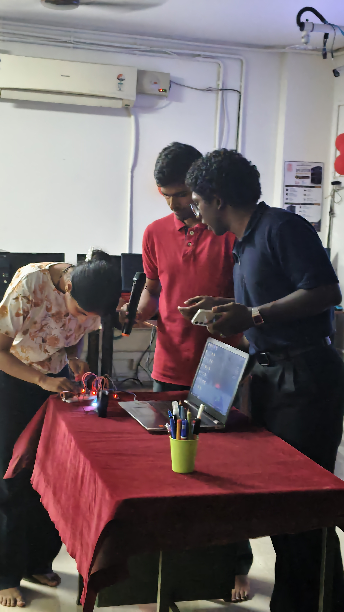

Project Overview
Project Description:“Kaattu Vendavante, Kaattu Kalayunna Yanthram!” is a hilariously unnecessary machine that turns your voice, claps, and even a simple blow into fan movement. The most unnecessarily dramatic fan, it rewards noise with rotation and silence with stillness—proving that sometimes, the more you disturb the peace, the more you get cooled!. An Arduino-powered acoustic-reactive DC fan controller that dynamically adjusts a cooling fan's RPM based on sound and wind pressure captured by a KY-038 microphone sensor, translating spoken words or physical blowing into real-time mechanical airflow using an NPN transistor driver.
The Problem (that doesn't exist)
Manual fan switches require far too much finger exertion, and the traditional human method of blowing on oneself to cool down is terribly inefficient. Furthermore, sitting in a silent room while working is an unacceptably mundane experience that fails to force you to actively earn your own comfort.
The Solution (that nobody asked for)
By continuously monitoring acoustic and wind input through an analog microphone module, this system uses peak-to-peak amplitude calculations to ramp up a DC axial fan based on your vocal or respiratory exertion. Whether you are loudly ranting at your monitor or literally huffing and puffing directly into the sensor, you must actively yell, clap, or blow your way to a personalized breeze.
Technical Details
Technologies & Components
- Software: C++ (Arduino IDE), Arduino Core Libraries, Analog Input Processing & PWM Signal Mapping Algorithms, Arduino Serial Monitor for Calibration
- Hardware: Arduino Nano or Uno (CH340 Clone) with USB Cable, KY-038 Sound / Microphone Sensor Module (Analog Out), Mini 5V or 12V DC Cooling Fan (Axial), 2N2222 NPN Transistor, 1N4007 Flyback Diode, 1k Ohm Resistor (1/4 Watt), Breadboard & Jumper Wires Pack
Schematic & Circuit
The KY-038 sound sensor sends analog sound levels to the Arduino Nano through A0. The Nano displays the readings on the I2C LCD via A4/A5 and controls the fan through a 2N2222A transistor using D9. The fan is powered separately by a 3.7V battery, while red and green LEDs connected to D7 and D6 indicate fan OFF and ON status respectively. All components share a common ground.
Build Steps
- Prepare the components: Gather the Arduino Nano, KY-038 sound sensor, I2C LCD, 2N2222A transistor, fan, battery, LEDs, resistors, breadboard, and jumper wires.
- Connect the Arduino Nano to the laptop through USB to power the Arduino, sensor, LCD, and LEDs.
- Connect Arduino GND to the breadboard ground rail. Connect the sensor GND, LCD GND, transistor emitter, battery negative, and LED cathodes to this common ground.
- Connect KY-038 VCC to 5V, GND to GND, and AO to Arduino A0 (leave DO disconnected).
- Connect LCD VCC to 5V, GND to GND, SDA to A4, and SCL to A5.
- Connect the fan’s positive wire to the 3.7V battery positive terminal, and the negative wire to the collector of the 2N2222A transistor (emitter to battery negative).
- Connect Arduino D9 to the transistor base through a 220Ω resistor, ensuring a common ground.
- Connect the green LED to D6 and the red LED to D7 through 220Ω resistors to GND.
- Program the Arduino to read sound intensity, display it on the LCD, vary fan speed via PWM, and manage LED indicators.
- Test the setup: blowing or making noise turns on the green LED and activates the fan; quiet conditions turn on the red LED and stop the fan.
- Observe sensor values in the Serial Monitor and calibrate sound thresholds for reliable operation.
Project Gallery







Video Documentation
Final Project Demo
The prototype was first powered on using the switch, and instructions were displayed. Blowing air or speaking near the sound sensor increased sound intensity, activating the fan. When sound input stopped, the fan halted.
Building Time
Additional Build Videos MUST WATCH
Presentations MUST WATCH
Team Contributions
- IRENE: Schematics, Circuit, and Integration
- EPHREM: Coding and Error Handling